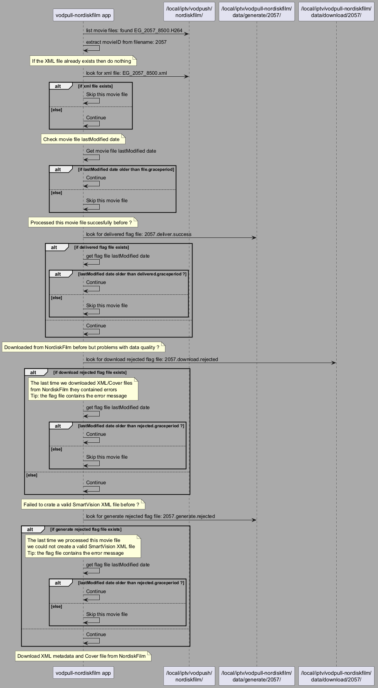

@startuml
skinparam backgroundcolor #AAAAAA
participant "vodpull-nordiskfilm app" as vodpull
participant "/local/iptv/vodpush/\nnordiskfilm/" as vodpush
participant "/local/iptv/vodpull-nordiskfilm/\ndata/generate/2057/" as generate
participant "/local/iptv/vodpull-nordiskfilm/\ndata/download/2057/" as download
vodpull->vodpush: list movie files: found EG_2057_8500.H264
vodpull->vodpull: extract movieID from filename: 2057
note over vodpull: If the XML file already exists then do nothing
vodpull->vodpush: look for xml file: EG_2057_8500.xml
alt if xml file exists
vodpull->vodpull: Skip this movie file
else else
vodpull->vodpull: Continue
end
note over vodpull: Check movie file lastModified date
vodpull->vodpull: Get movie file lastModified date
alt if lastModified date older than file.graceperiod
vodpull->vodpull: Continue
else else
vodpull->vodpull: Skip this movie file
end
note over vodpull: Processed this movie file succesfully before ?
vodpull->generate: look for delivered flag file: 2057.deliver.success
alt if delivered flag file exists
vodpull->vodpull: get flag file lastModified date
alt lastModified date older than delivered.graceperiod ?
vodpull->vodpull: Continue
else else
vodpull->vodpull: Skip this movie file
end
else
vodpull->vodpull: Continue
end
note over vodpull: Downloaded from NordiskFilm before but problems with data quality ?
vodpull->download: look for download rejected flag file: 2057.download.rejected
alt if download rejected flag file exists
note over vodpull: The last time we downloaded XML/Cover files\nfrom NordiskFilm they contained errors\nTip: the flag file contains the error message
vodpull->vodpull: get flag file lastModified date
alt lastModified date older than rejected.graceperiod ?
vodpull->vodpull: Continue
else else
vodpull->vodpull: Skip this movie file
end
else else
vodpull->vodpull: Continue
end
note over vodpull: Failed to crate a valid SmartVision XML file before ?
vodpull->generate: look for generate rejected flag file: 2057.generate.rejected
alt if generate rejected flag file exists
note over vodpull: The last time we processed this movie file\nwe could not create a valid SmartVision XML file\nTip: the flag file contains the error message
vodpull->vodpull: get flag file lastModified date
alt lastModified date older than rejected.graceperiod ?
vodpull->vodpull: Continue
else else
vodpull->vodpull: Skip this movie file
end
else
vodpull->vodpull: Continue
end
note over vodpull: Download XML metadata and Cover file from NordiskFilm
@enduml